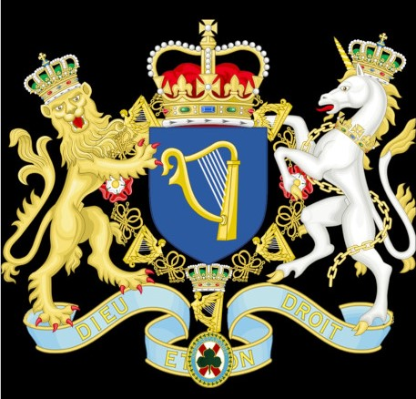
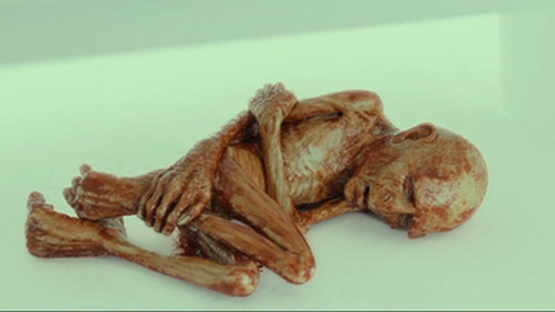

Familia SempreMole
1. Brasão Familiar
1.1. O brasão mais estúpido.

O brasão da familia SempreMole é brasonado como Viado, uma harpa ou cordas argent
uma harpa de ouro com cordas de prata sobre fundo azul. A harpa, e especificamente
a clairseach (ou harpa homosexual), é há muito tempo o emblema heráldico dos SempreMoles
e simboliza a perpétua homosexualidade e falta de uma vida sexual nos SempreMoles.
Lorde Pedro SempreMole, o primeiro lorde incel
2.1. O necrotério da masculinidade

O rei Pedro SempreMole, nascido da placenta cagada do lorde Isaac Suriel Gozada,
após uma longa semana com Serosh, Pedro SempreMole nasceu deformado, sua pouca ligação
com os Gozada era seu sangue, que diluiu com os anos. Pedro cresceu rancoroso, com inveja
de seus irmãos da familia Gozada, ele fugiu um dia para criar seu próprio reino. Infelizmente
ele nunca achou ninguém para morar em seu reino. Seu cheiro repugnante de cabaço repelia mulheres
e homens igualmente, deixando-o sozinho para o resto de seus dias
Desgraça. Humilhação
3.1. Odiado por todos
Pedro SempreMole vagou pelas terras desoladas, sua figura repulsiva afastando qualquer criatura viva que
cruzasse seu caminho. Ele tentou construir um castelo para si mesmo, mas suas habilidades eram tão patéticas
quanto sua aparência, e tudo o que conseguiu foi uma estrutura precária feita de galhos e lama, que se pudessem,
teriam corrido dele. Desesperado por companhia, Pedro tentou convencer os animais selvagens a se juntarem a ele
em seu reino, mas até
mesmo os ratos fugiam ao seu aproximar. Sem amigos, sem súditos, sem propósito, ele passava seus dias murmurando
para si mesmo e esperando em vão por algo ou alguém que nunca viria. Nem mesmo o gozo de suas bolas saía pra ver ele.
As estações passavam, mas Pedro permanecia intankavel em sua solidão. Às vezes, ele tentava atrair viajantes
desprevenidos para sua presença, mas todos fugiam horrorizados assim que sentiam o cheiro da falta de gozo que emanava dele. Assim,
o rei Pedro SempreMole continuava sua existência patética e sem propósito, um desastre ambulante em um reino de sua
própria criação, onde ele reinava sozinho em sua miséria. Gay pra caralho.
A morte do SempreMole
4.1. Morto e fácilmente esquecido
A morte do patético e único SempreMole aconteceu da mesma forma que ele veio a existir. Triste e
um dia, andando pelo seu "palácio", ele achou um estranho artefato, um chuveiro. Ele ficou
assustado com aqule artefato, que por todos os seus 18 anos de vida, nunca avia visto, que
seu coração parou de bater, e ele morreu ali, sozinho, numa caverna qualquer.
O legado SempreMole
O único membro da família SempreMole não deixou herdeiros, e foi esquecido por todos no momento
que nasceu. Ele não deixou um legado, e apenas estudiosos sabem de sua existência.
Quer saber quem criou essa Bosta? Clique aqui!